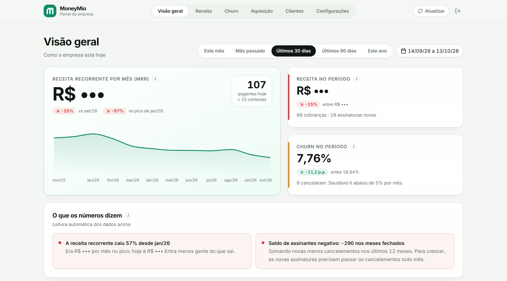
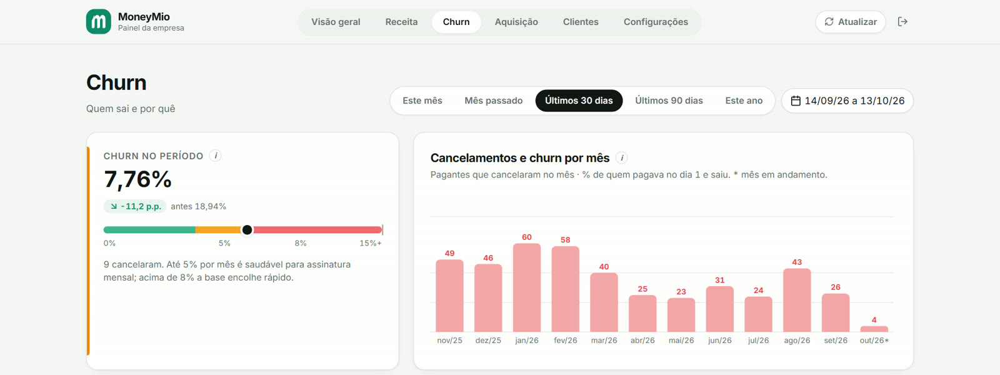
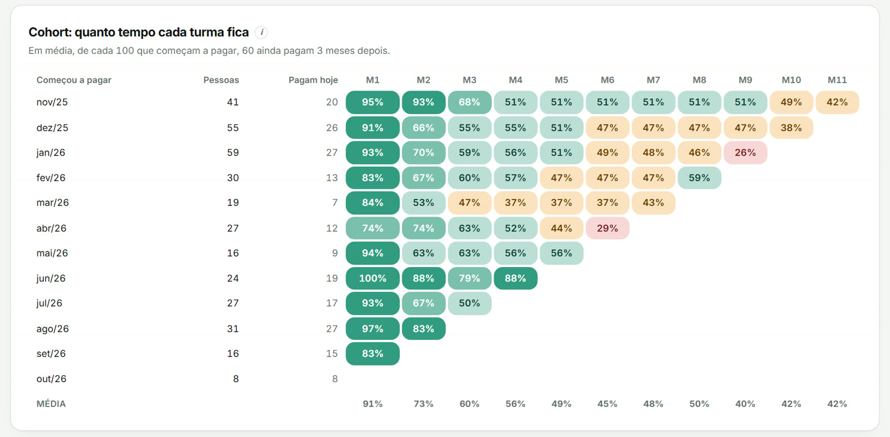

O churn de um app por assinatura não era desistência.
Como um painel organizado por pergunta juntou três contas de pagamento, mostrou quanto tempo cada turma de clientes fica e revelou que a maior parte dos cancelamentos recentes era cartão recusado.

Os números existiam. A resposta, não.
A MoneyMio recebe por três contas de pagamento diferentes, investe em tráfego pago e conversa com os clientes por um bot no WhatsApp. A ferramenta de métricas que usava só aceitava uma fonte de pagamento, então ninguém via a base inteira.
As perguntas do dia a dia ficavam sem resposta: a receita está caindo porque entra pouca gente ou porque sai muita? Quem cancela quis mesmo sair? Quanto tempo um cliente novo costuma ficar?
Uma aba para cada pergunta.
Em vez de um painel com tudo, cada aba responde a uma pergunta de negócio. Antes de qualquer gráfico, vieram as definições.
Churn do mês
Quem pagava no dia 1 e cancelou no mês, dividido por quem pagava no dia 1.
Turma (cohort)
O mês em que a pessoa começou a pagar, depois do teste grátis.
Receita recorrente
Soma das assinaturas ativas das três contas, já com desconto aplicado.
Cartão recusado
Separado da desistência, porque pede outra ação.
Três achados que mudaram a conversa.
O churn caiu pela metade ao longo do ano.
A média mensal foi de 11,1% entre novembro e março para 5,5% de abril a setembro. O painel mostra o mês atual numa régua: até 5% é saudável para assinatura mensal; acima de 8%, a base encolhe rápido.

A retenção se decide no segundo mês.
Em média, 60% de cada turma ainda paga três meses depois. A maior perda acontece logo no começo: de 91% no primeiro mês para 73% no segundo. É ali que vale concentrar a experiência do cliente novo.

Quem cancelava, em geral, não quis cancelar.
Separando os motivos, a maior parte dos cancelamentos entre julho e outubro veio de cartão recusado, não de decisão do cliente. Nesse caso, desconto não ajuda: o que resolve é avisar e recuperar a cobrança.
cancelamentos entre julho e outubro foram por cartão recusado.
Da planilha solta para a decisão.
Um número só de receita
As três contas de pagamento somadas num painel, sem depender de uma ferramenta que só lia uma.
Alerta de cartão recusado
O cancelamento involuntário ganhou destaque próprio: a primeira ação passa a ser recuperar o pagamento.
Leitura automática
O painel escreve em português o que os números dizem, como o saldo entre quem entra e quem sai.
Retenção por turma
O cohort mostra se cada mudança no produto segura mais gente do que a turma anterior.
Dados publicados com autorização da MoneyMio. Valores em reais, nomes e e-mails de clientes omitidos.
Quer essa clareza no seu negócio?
Me conte o contexto e a pergunta que os seus dados ainda não respondem.